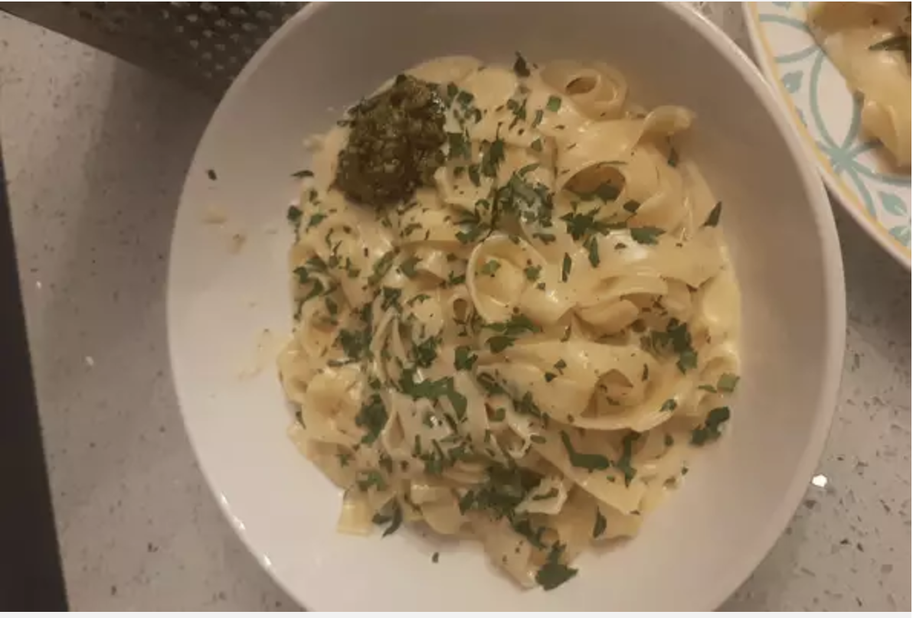

To Die For Fettuccine Alfredo

Description:
"This is a recipe that I created by modifying my mother's recipe.
My boyfriend is a fettuccine Alfredo connoisseur and he scrapes the pan every time!
I get nothing but rave reviews when I make this dish.
I must warn you, this recipe is not for the health conscious. Enjoy!" - Erin Marie
Ingredients:
- 24 ounces dry fettuccine pasta
- 1 cup butter
- 3/4 pint heavy cream
- salt & pepper to taste
- 1 dash garlic salt
- 3/4 cup grated romano cheese
- 1/2 cup grated parmesean cheese
Steps:
- Bring pot of salted water to boil
- Cook fettuccine until al dente
- Melt butter and cream over low heat; add salt, garlic salt, and pepper
- stir in cheese over medium heat until melted and thickened
- add pasta to sauce
Back To Home
Original Recipe Credits
Go To Top